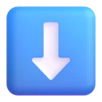

Descargador
Copia el enlace, ábrela y toca Pegar. O compártelo desde cualquier app. Elige video o solo audio y la calidad.
- Video en la mejor calidad disponible
- Audio en MP3 de 128 a 320 kbps, M4A, OPUS, FLAC y WAV
- Fotos, carruseles e historias
- Cola de descargas, descarga masiva y programadas